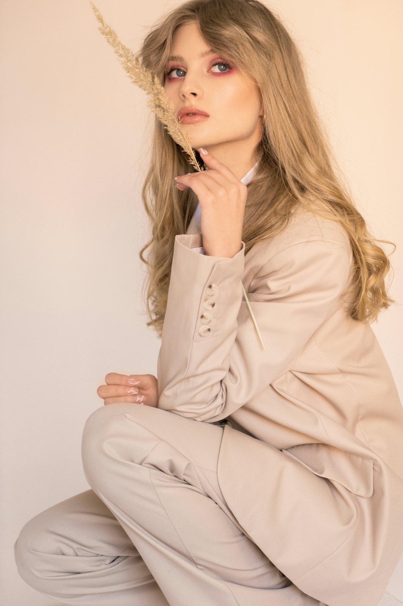
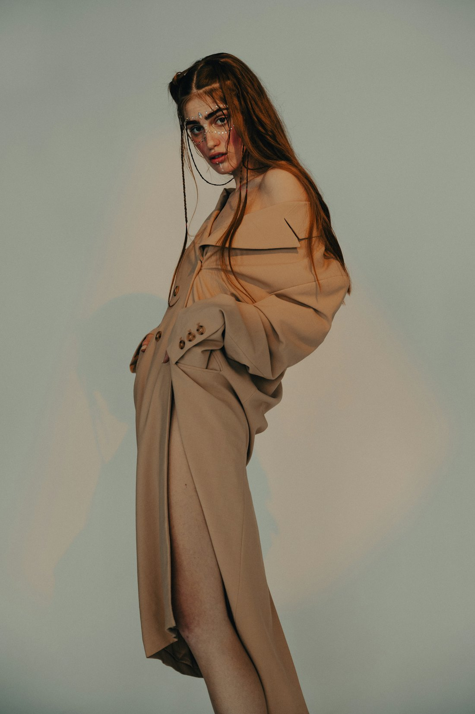

Issue N°14Autumn / Winter 2026Jaipur · twelve pieces · made in small runs
Northlane, Autumn / Winter 2026

12 Northlane · AW26
The Autumn Edit 13


Soft tailoring, warm neutrals.
We make a small number of things in honest materials, and we make them to be worn out slowly.
Relaxed suiting, brushed knits and leather that ages with you. Twelve pieces that work together, made in small runs in family workshops.
Shop the editShop the page
Leather that softens. Cotton that holds its shape. Knits you’ll still be wearing in ten years.
Lookbook
Autumn / Winter 2026 · drag to turn the page



28 Lookbook

Fewer things, better made.
- Made in
- Three family workshops
- Repairs
- Free for two years
- Materials
- Organic, recycled, vegetable-tanned
40 The workshop
In this issue
See all pieces46 The new arrivals
Notes on craft

Guides · 4 min read
Five pieces, fifteen outfits
How to build a small autumn wardrobe that actually works together.

Care · 3 min read
Wash less, wear longer
Simple ways to keep wool and cotton soft for years, not seasons.

Makers · 6 min read
Inside the knitting workshop
Meet the family who knit our Rib Knit by hand, twelve at a time.
52 Notes
Letters
56 Back page